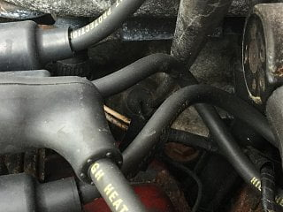
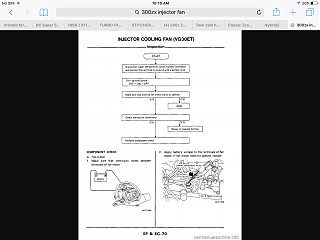

-
Checked 89 FSM in EFEC section on Xenon and my hard copy 1987 FSM and neither show it. It's not the CHTS and I know where that is.
My 88T doesn't have it but my 89T does. It has a single wire and looks like it is screwed into the lower intake manifold behind the distributor right above cylinder number 2 spark plug. Here is a pic:
 -
Coolant Temperature Sensor? I know the Turbo models have two sensors, one on the cylinder head in the usual place, and a second one on the lower intake manifold. I believe it is a single wire, also. That's the only thing I could think it would be…1985 300ZX Z31 2+2 VG33ET (running!) -
Thanks for the reply. Coolant temp sense is on RH side. Whats odd is it is only on the 89 motor. Both my 88T motors don't have it. -
For sure it is a water temp sensor. They are located above No. 2 cylinder only on Turbo models. The sensor on the opposite side is for the gauge cluster, and the one on the front of the cylinder head (CHTS) is for the ECU. I'm not sure what the Turbo model water temp sensor is for, but I'm sure it has something to do with forced induction. Steve sells them at 300zxpartsforyou.com, part # WTS-36-70. Is there any chance your 88T was originally an NA car?
wts-38-70.jpg
part in question1985 300ZX Z31 2+2 VG33ET (running!) -
Thanks. Maybe just 88 didn't have it? I have a plug in both intakes. Definitely orignal engine. And the others pulled from an 88t that I'm pretty sure was the original engine too.
I wonder what it controls? I'll have to see if I can find it on the wiring diagram. That's going to be fun.
I found it in the cooling section on page LC-13. I wish it said what it is for. It does show in the 87, 88, and 89 FSM.
Last edited by JSM; 11-03-2017, 09:35 PM. -
I think I figured it out. It is specific to the digital dash cars. It shows on page EC-67 schematic for the digital dash, but I can't find reference to it on the next pages for the analog.
Since my 88T is analog gauge cluster and so was the motor I pulled the other 88T engine from, it was not installed. The 89 has a digital dash and has the water temp sensor as the cluste must need it.Last edited by JSM; 11-03-2017, 10:20 PM. -
its not the engine knock sensor is it? -
but why would my 88T's not have it but my 89 does? Both cars are automatic.Originally posted by rambis View Post
Last edited by JSM; 11-04-2017, 09:12 AM. -
I found reference to the injector fans in the 84-86 FSM but not the 87-89 FSM. They must have deleted them in the later years and repurposed.Last edited by JSM; 11-04-2017, 09:21 AM. -
My 84na had the injector fan setup,but my 84 turbo did not.Both are JDM. -
84-85 turbo & 86 non-turbo had injector fans. Dunno if that's US only. I added one to my 85 NA back in the day for fun. I wonder if during the injector campaign some got added to different cars.

Copyright © 2006–. All rights reserved. Privacy Policy
Comment